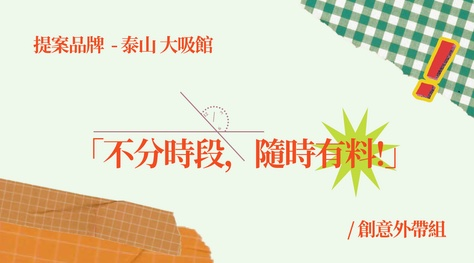
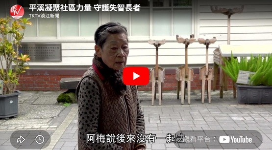
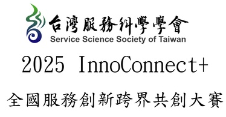

7aDy.bug 是一支整合行銷團隊，從市場洞察、社群內容、視覺設計到 O2O 線下活動，替品牌設計一場能被參與、被分享、被留下印象的行銷體驗。
從市場調查、互動體驗、短影音到 O2O 導流——每一種卡住，都有對應的修法。我們用五個步驟，把問題一個一個抓出來。
看我們的 Debug 五步驟 ↗



看完整作品案例 ↗
告訴我們您的品牌目前遇到的問題，7aDy.bug 會協助整理適合的合作方向。